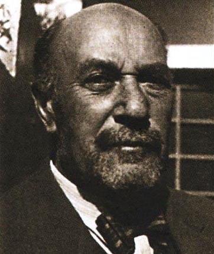
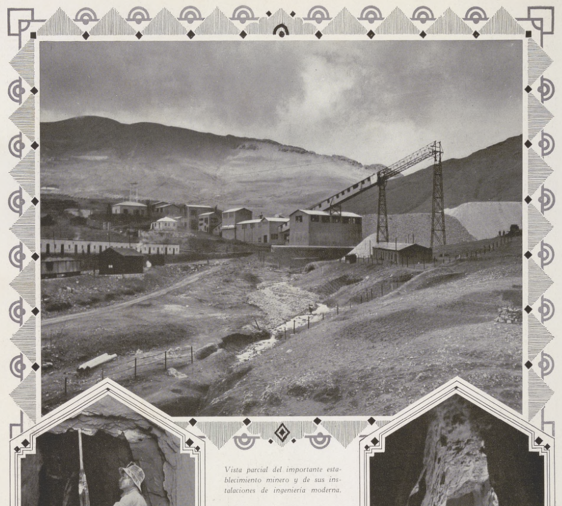
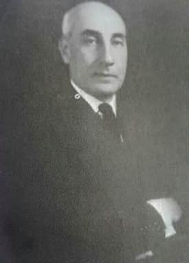
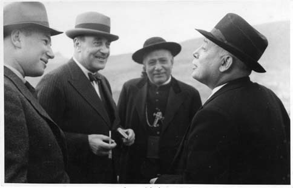
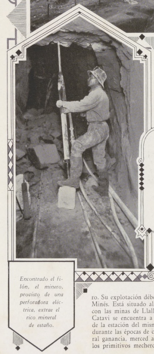
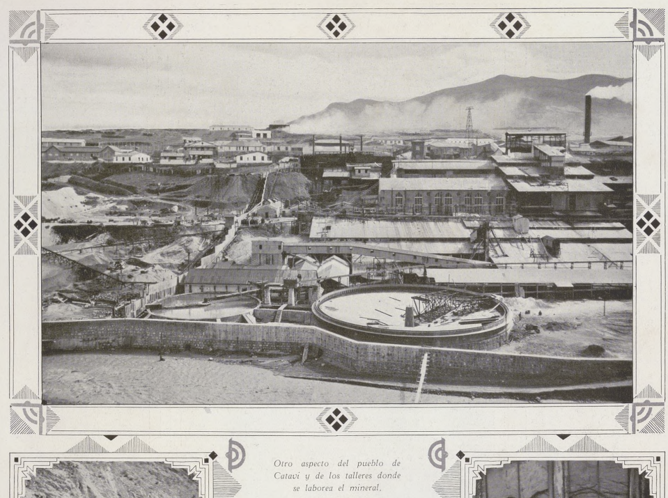

Patiño, Hochschild y Aramayo
Los barones del estaño y el poder detrás del Estado
Minería, economía y poder político en Bolivia

Introducción
Durante gran parte del siglo XX, la minería fue una de las principales actividades económicas de Bolivia.
El estaño se convirtió en un mineral fundamental para las exportaciones y permitió la formación de grandes fortunas.
Tres empresarios destacaron por su influencia: Simón I. Patiño, Mauricio Hochschild y Carlos Víctor Aramayo.

Bolivia a principios del siglo XX
La economía boliviana dependía principalmente de la explotación y exportación de minerales.
La producción de estaño adquirió mayor importancia y desplazó progresivamente a la minería de la plata.
La riqueza minera se concentró en pocas empresas, mientras gran parte de la población vivía en condiciones de pobreza.

La era del estaño
El estaño era utilizado principalmente para fabricar hojalata, soldaduras y diferentes productos industriales.
Su demanda internacional aumentó y convirtió a Bolivia en uno de los principales productores mundiales.
La actividad minera generaba ingresos para el país, pero también una gran concentración de riqueza.

Simón I. Patiño

Fue uno de los empresarios mineros más importantes de Bolivia y del mundo.
Su fortuna comenzó con la explotación de la mina La Salvadora, en el área de Llallagua.
Expandió sus negocios hacia fundiciones, transporte y empresas internacionales.
Llegó a tener una enorme influencia en la economía boliviana y el mercado internacional del estaño.
Mauricio Hochschild

Fue un importante empresario minero de origen alemán.
Desarrolló empresas dedicadas a la explotación y comercialización de minerales.
Su grupo empresarial llegó a controlar importantes minas y operaciones mineras en Bolivia.
Se destacó por sus negocios, inversiones y organización empresarial.
Carlos Víctor Aramayo

Pertenecía a una familia con una larga tradición empresarial minera en Bolivia.
Su familia desarrolló importantes actividades relacionadas con la explotación de minerales.
El grupo Aramayo mantuvo intereses en diferentes minas y empresas mineras.
También tuvo influencia en la política y en la economía nacional.
El poder detrás de la economía
Los tres empresarios concentraban una gran parte de la producción y exportación del estaño.
Sus empresas controlaban minas, instalaciones industriales y redes comerciales.
La importancia de sus negocios les permitió influir en las decisiones económicas del país.
Bolivia dependía en gran medida de los ingresos provenientes de la minería.

Influencia en el Estado
La riqueza de los grandes empresarios mineros les proporcionó una considerable influencia política.
Sus intereses económicos podían influir en las decisiones de los gobiernos.
La relación entre el poder económico y el poder político generó críticas y conflictos sociales.
Por este motivo, se los relacionó con el término “Rosca minera”.

Los trabajadores mineros
Mientras los empresarios acumulaban grandes fortunas, los trabajadores enfrentaban condiciones laborales difíciles.
Existían jornadas exigentes, bajos salarios, problemas de salud y condiciones de seguridad limitadas.
Los trabajadores comenzaron a organizarse para exigir mejores salarios, derechos laborales y condiciones dignas.

La Revolución Nacional de 1952
El 9 de abril de 1952 comenzó una revolución que transformó profundamente Bolivia.
Los trabajadores mineros, junto a otros sectores populares, tuvieron un papel fundamental.
La revolución debilitó el poder político de los grupos tradicionales.
Entre sus principales transformaciones estuvieron el voto universal, la reforma agraria y la nacionalización de las minas.

31 de octubre de 1952
El gobierno de Víctor Paz Estenssoro nacionalizó las principales minas de los grupos Patiño, Hochschild y Aramayo.
Los recursos mineros pasaron a formar parte del control estatal.
Se creó la Corporación Minera de Bolivia, conocida como COMIBOL.
Este acontecimiento marcó el final del dominio de los grandes barones sobre la minería boliviana.

Conclusión
Patiño, Hochschild y Aramayo representaron una etapa de gran concentración de riqueza y poder en Bolivia.
Sus empresas tuvieron enorme importancia en la economía nacional, pero también generaron debates sobre desigualdad y la influencia del poder económico en el Estado.
La Revolución de 1952 y la nacionalización de las minas marcaron un cambio fundamental en la historia política y económica del país.

Gracias por su atención
Los barones del estaño
La historia de la minería también es la historia del poder, los trabajadores y la transformación de Bolivia.

Las imágenes se cargan desde Wikimedia Commons; se necesita conexión a Internet.